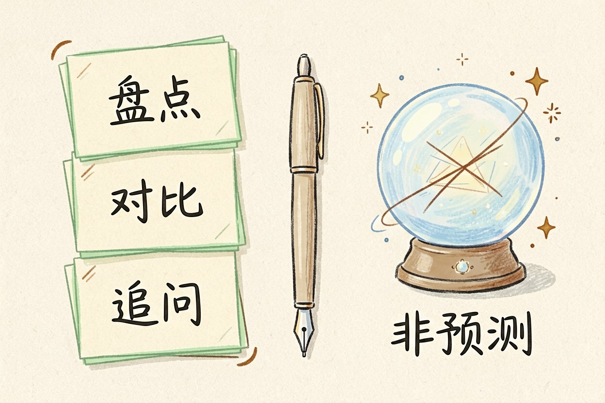
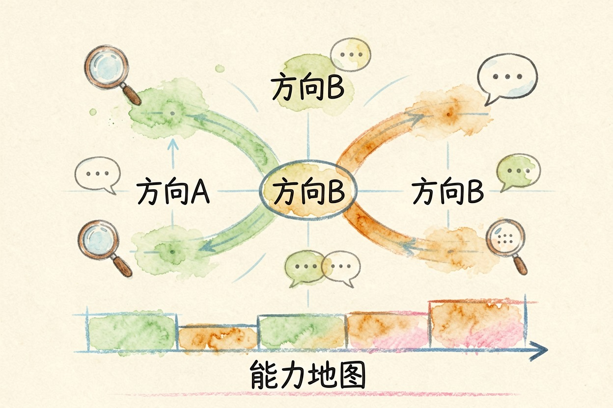
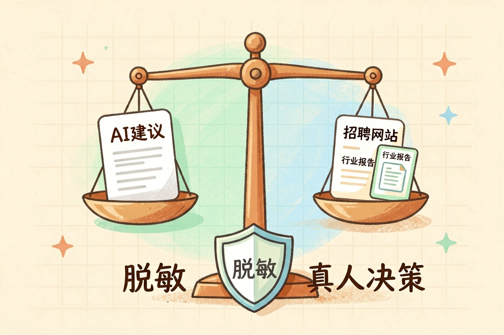

AI 职业规划是什么？用 AI 看清方向
它不预测命运，只整理经历、帮你看到选项。建议要用真实岗位交叉验证，决定权留在你手里。
AI 做职业规划，先要摆正期待。它不是算命先生，而是把经历整理成结构化信息、帮你看选项的顾问。它擅长盘点、对比、提问，但不懂市场真实行情，也读不懂你内心的真实感受。
重点是把这三步走完：盘点、对比、验证。每一步都不难，难在别跳过。建议只能当参考，决定权留给你自己。
AI 做职业规划：先分清能做什么、不能做什么

能做三件事：盘点经历、对比方向、追问盲区。你把岗位、技能、项目喂进去，它帮你画出能力地图。
不能做的也有三件：预测命运、提供真实行情、替你拍板。它说「你适合做产品经理」，那是顺着你的话推出来的，不是市场给你的结论。
它的价值，恰恰在「整理」而不在「预测」。分清这个边界，你就不会把它当算命用。
第一步：把经历整理成 AI 能读的输入
第一步，是把经历喂进去。别一上来就丢一句「帮我规划职业」。先把岗位、技能、项目、偏好写清楚，AI 才有东西可分析。用下面这份提示词：
你是职业顾问。请基于以下经历做能力盘点：
1) 我做过：{岗位与职责}
2) 我擅长：{技能，含年限}
3) 我做过的项目：{项目与成果}
4) 我喜欢/不喜欢：{偏好}
输出：能力清单、短板、三个可能方向。
没写进上文的内容不要编造。写清经历之后，回复会具体得多。这一步花十分钟，后面省一小时。
第二步：让 AI 做三个动作

输入整理好，就可以让它干三件事。第一，能力地图：把技能分组，标出哪几项最值钱。第二，方向对比：给两个候选方向，让它列各自的门槛和路径。
第三，模拟面试：让 AI 按目标岗位追问，暴露你没想过的盲区。想让它再深入一层，方向对比可以这样问：
请对比「方向A」和「方向B」：
1) 各自需要的核心技能
2) 我的经历在两边分别差在哪
3) 假设投入一年，哪条路更稳
只依据我给的信息，别编造行业数据。三个动作做完，你手里就有了一张相对完整的地图。
第三步：交叉验证，别只听 AI 的

AI 会编出看似合理的岗位名称、技能要求、行业趋势。它说「数据分析很吃香」，不等于真的吃香。用招聘网站搜真实岗位，看职位描述里的技能和薪资；用行业报告核对趋势。
最后一步，永远是回到真实世界。交叉验证后，保留对得上的，丢掉对不上的。想知道招聘端怎么筛人，可看AI 招聘系统怎么筛简历；方向定了，用用 AI 优化简历把经历落地。
边界与隐私：决定留给真人，简历要脱敏
最后两条红线。第一，决定权别全交给 AI。它给参考，你找真人导师、行业前辈再聊一轮。
第二，简历是高度隐私，喂 AI 前先脱敏：隐去手机号、住址、公司全名，只留岗位与技能。AI 做职业规划是工具，不是算命。它帮你把选项摆上桌，怎么选还得你自己来。
别把完整简历丢给不明工具，也别让 AI 替你做人生决定。想深入练习，可看用 AI 模拟面试，或去AI 工具导航挑合适的工具。就业政策与招聘规定，以人力资源社会保障部官网{:target="_blank"}和教育部官网{:target="_blank"}发布为准。AI 做职业规划，记住这一句：它出参考，你出决定。
本文信息核对于 2026-08-06。AI 产品的价格、免费额度与功能变动频繁，实际以各工具官网当前说明为准。